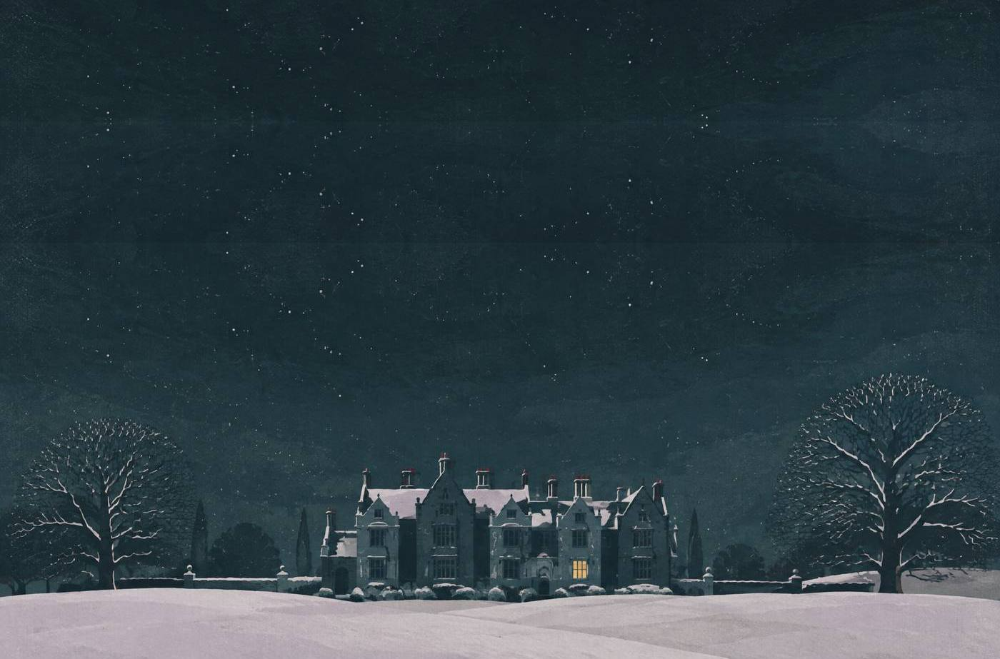
Who Killed Aldous Finch?
Solve the murder and you will know how artificial minds learned to think and understand our world. A plain-language guide to the transformer, the architecture they are built on.
This is a murder mystery, and it is fair: every fact needed to name the killer is in the story. It is also a working model of the machine behind ChatGPT. Read the story first. When it ends, the costumes come off and each part of it is matched to the part of the machine it stands for.
The people in this story
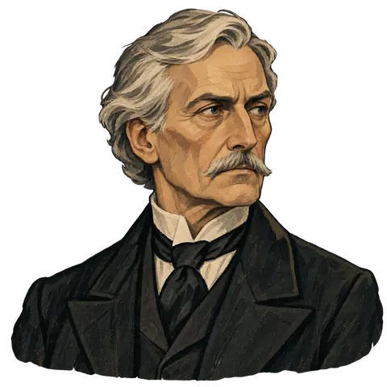
Aldous Finch Master of Harrow Manor and a maker of clocks. Found dead in his study.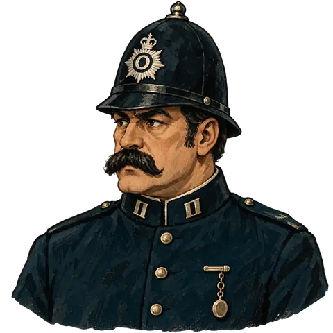
Constable Plodd The local policeman. First on the scene.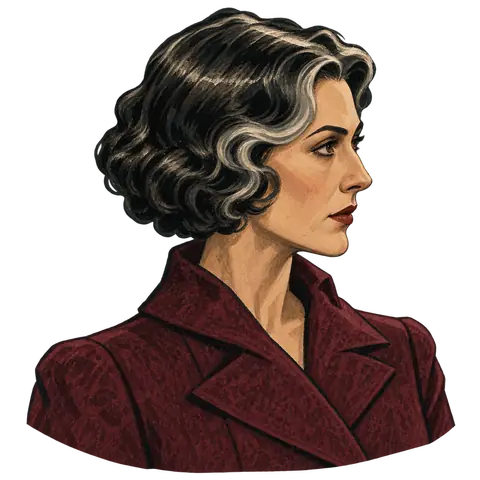
Inspector Verity Sent from the county the next morning.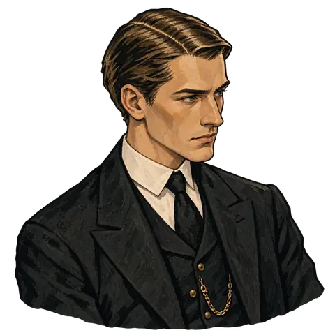
The valet The hall clock runs forty minutes fast.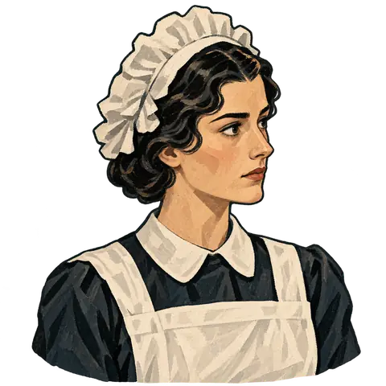
Ellen, the maid Heard an argument in the study at nine, by the hall clock.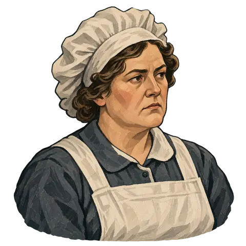
The cook The Colonel is the only tall man in the house.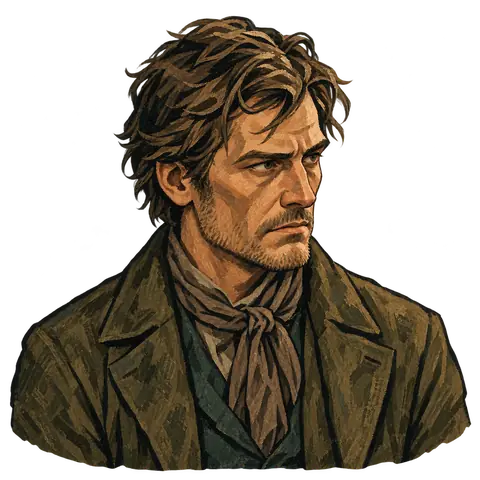
The gardener Saw a tall figure cross the lawn to the study after the dinner gong.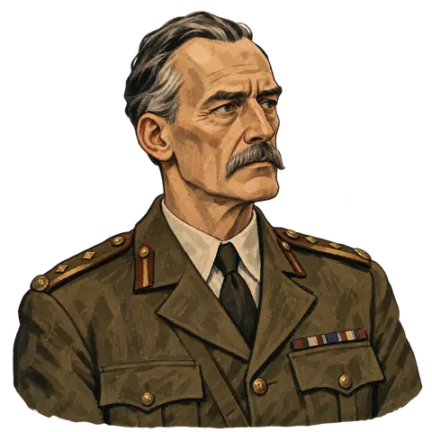
The Colonel, a guest Says he was at dinner from eight.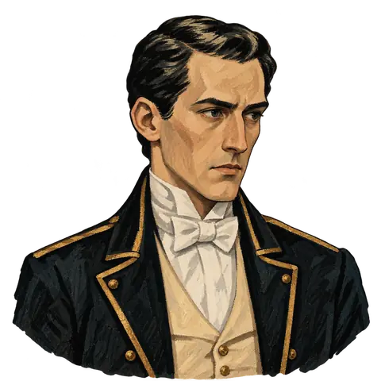
The footman Served the soup, and the Colonel came down late.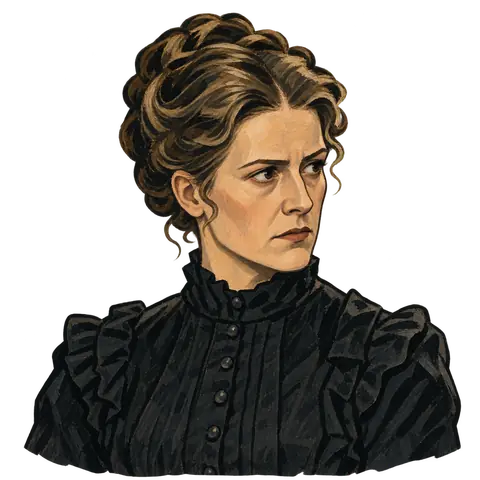
The housekeeper Found the body at half past eight.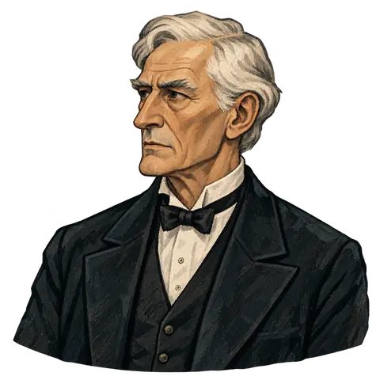
The butler Thirty years in the house.A clockmaker is dead, and his own clock stopped at twenty past eight
On the night of the first snow, Aldous Finch was found dead in his study at Harrow Manor, with a smashed carriage clock on the rug beside him. He had made that clock himself, and sold clocks like it for a great deal of money. People disliked him quietly, the way people dislike the rich.
The carriage clock had stopped at twenty past eight. It kept true time, which was more than could be said for the hall clock downstairs. The study had its own door onto the lawn, a minute's walk round from the dining room.
Nine people were in the house that night. Each of them knew one thing, and not one of those things accused anybody. Laid side by side in the right order, they name the killer.
Plodd had every fact in the case and no case at all
Constable Plodd was thorough. He was also alone, with nine people to question, so he did what a policeman does. He stood in the corridor and had them in one by one.
The valet came first and mentioned the hall clock. Plodd wrote it down. Four witnesses later Ellen said nine o'clock, and Plodd wrote nine o'clock, because by then the hall clock was eleven pages back in his notebook. He could have turned back. Plodd did not turn back eleven pages for a maid. The footman said the Colonel came down late. Late compared with what? Plodd did not ask. The Colonel had not been interviewed yet, and would not be for another hour. When the Colonel finally said he had been at dinner from eight, Plodd believed him, because the man had a medal and a way of standing.
By midnight Plodd had written down every fact in the case and could not see the killer in any of them. The valet's clock and Ellen's nine o'clock would have solved it together, and Plodd never held both in his head at the same time. He suspected the valet, who was about to be dismissed and bitter about it, and he had the sense not to say so out loud. At two in the morning he wired the county for help, with the answer already written in his own notebook, in the wrong order.
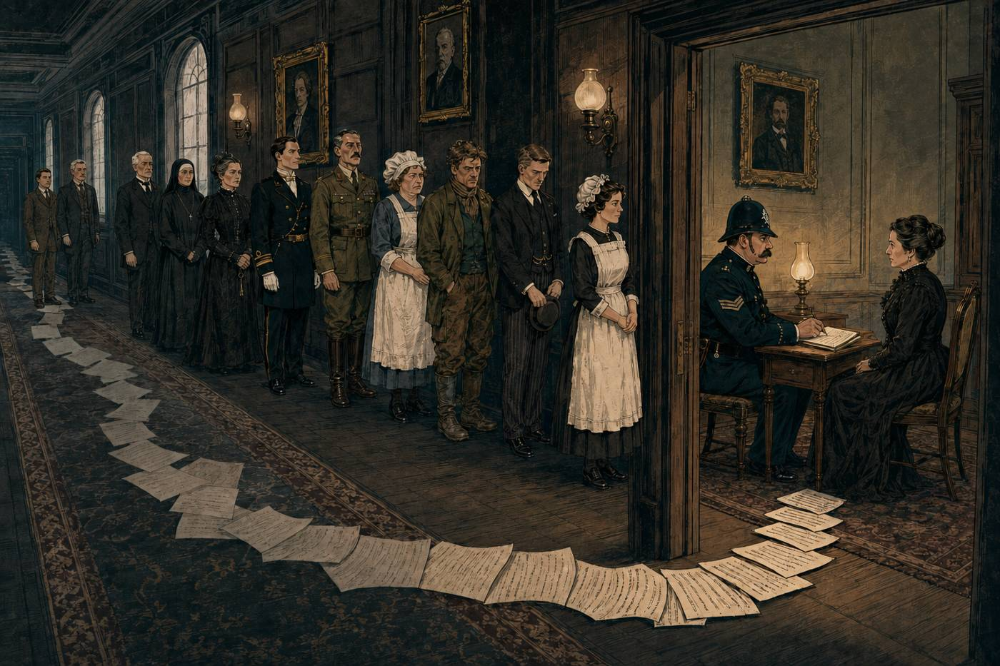
Verity's rule: read the room before you write, then say nothing more
Inspector Verity arrived on the morning train with a box of blank placards, and had a row of chairs set along one wall of the salon, with one chair spare at the end.
Her instruction was short. Each witness would come in alone and read every placard already worn in the room. Then they would write their one true thing on a placard, as it now stood in the light of what they had read. Read the room twice before you write, she added. The first time tells you what to look for. The second time you find it. Then pin it on, sit down, and say nothing more. Plodd's witnesses had spoken to Plodd alone; Verity's would read every answer given before theirs. Once a witness sat, they were finished, and no placard was ever changed.
The valet went first and read an empty room, which he did with some care, since Plodd was watching him from the door. He wrote:
Then Ellen. In the corridor the night before she had said nine o'clock and meant it. Here she read the valet's placard and went slightly pale. The hall clock says nine when it is really twenty past eight, because it runs forty minutes ahead. She wrote nine o'clock, struck it through, and wrote twenty past eight. Her placard read:
She sat down beside the valet and did not say another word. Nobody in the room said it out loud, but the clock beside the body had stopped at twenty past eight too.
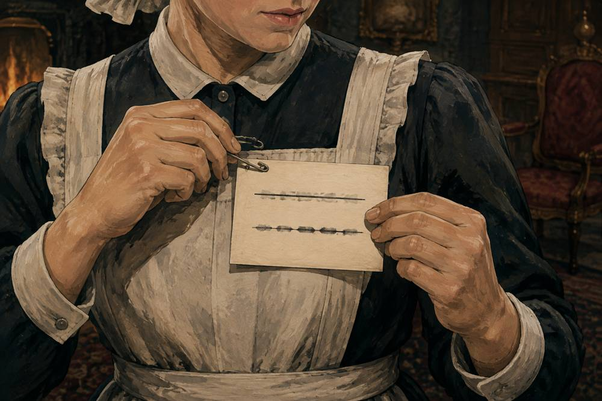
Drag the row sideways to see every chair.
The cook came third and wrote what she knew:
The gardener had seen a tall figure cross the lawn. The cook's placard said there was only one tall man in the house, so the figure had a name. So the gardener wrote:
That cleared the valet Plodd had suspected. The figure on the lawn was tall, and the valet was not.
The Colonel came in fifth. He read the row and took a long moment over the gardener's placard. It put him on the lawn, and he could not take it down. He could not tell a new story either, since the old one was already in Plodd's notebook. So he wrote exactly what he had told Plodd:
Nobody in the room could contradict him, so nobody did. The footman was still waiting outside the door.
The first read told the footman what to look for. The second read found it.
The footman was sixth. He came in with one blunt fact and no idea what it was worth.
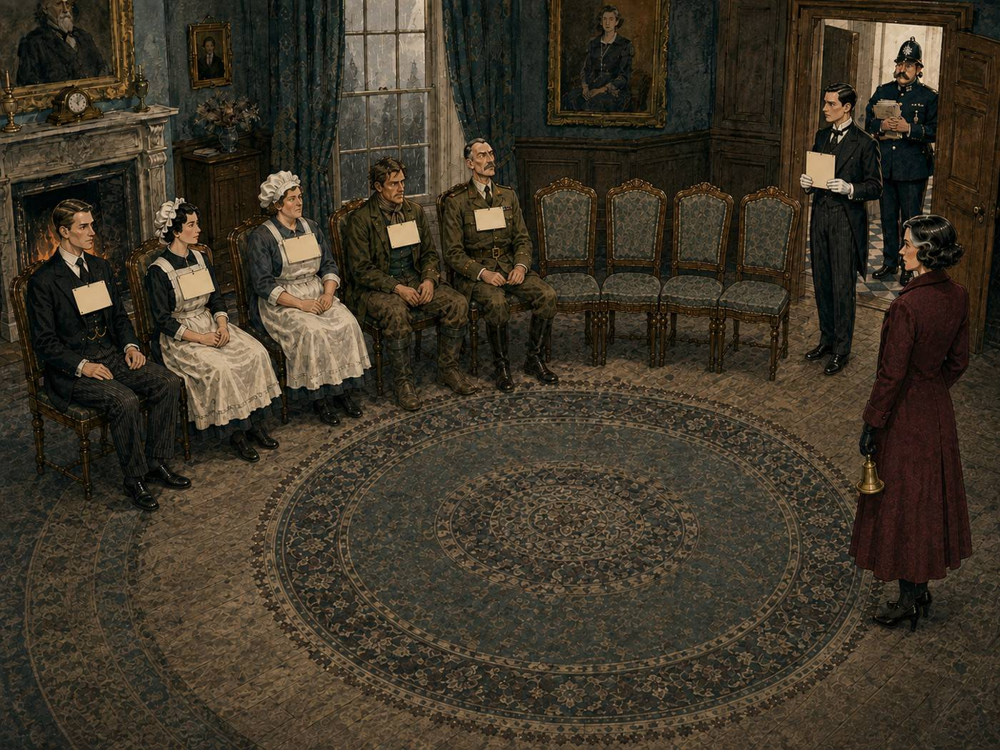
He read the five placards. The first read gave him one thing. The Colonel's placard said he was at dinner from eight, and the footman had served the soup, and the Colonel's chair had been empty for it. So the Colonel's story and the footman's memory did not match. But an empty chair only means something if you know the exact minute of the murder, and the footman did not.
So he read the row again, and this time he knew what he was hunting. The second read found Ellen: twenty past eight, the argument in the study. He could not have found that on the first read, because on the first read he had no reason to care what Ellen had heard.
He wrote:
Then he pinned it on and sat down. The Colonel, four chairs away, could not take his own placard back.
Drag the row sideways to see every chair.
The last witness to sit down was the only one who had read everything
The housekeeper came seventh and wrote:
Miss Finch, the dead man's sister, read that and wrote:
The room now had a reason. It had a nephew, and nobody in it who knew the nephew's name.
The butler came last. He walked in knowing one thing that nobody had asked him in thirty years, and he read eight placards. A clock that lies by forty minutes. An argument at twenty past eight, the minute the clock beside the body stopped. The only tall man in the house, at the study's garden door. A man who said he was at the table and was not. A will signed on Tuesday, and a nephew cut out of it.
He wrote:
He pinned it on and took the ninth chair.
Verity asked him one question, the only question she asked anyone all morning.
"Then who killed Aldous Finch?"
"The Colonel," said the butler. Verity wrote the name on a fresh placard and set it on the empty chair at the end of the row.
Drag the row sideways to see every chair.
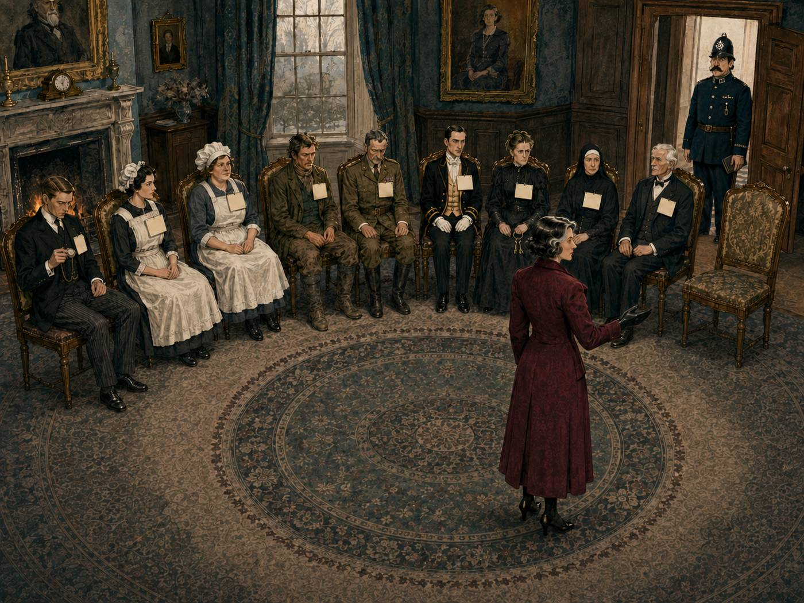
The reveal
The story is over. Here is what it was about.
When you type a question into ChatGPT, a program reads your words and types an answer back. That program is built on a design called a transformer. The T in GPT stands for it. The story you just read is that design, acted out by people in a country house.
Here is what the program does, in plain words. It reads your text one word at a time, left to right. For each new word, it looks back at all the words before it and works out what this word means here, in this sentence. It keeps that meaning. When it has read the last word, it asks one question: what word should come next? It picks one, adds it to the end of the text, and reads that new word the same way, by looking back at everything before it. Then it asks the question again. It keeps going, one word at a time, until the answer is finished. Every answer ChatGPT has ever typed to you was built this way.
Now match the story to the machine.
| In the story | In the machine |
|---|---|
| Constable Plodd, one witness at a time, with a notebook he cannot flip back through | The old design, called a recurrent network. It read one word at a time and carried a single memory forward, and that memory faded as it went. |
| Inspector Verity's salon | The transformer. |
| A seated witness with a placard on their chest | A word the program has already read, with its meaning worked out and stored. It is never redone when a new word arrives. |
| A newcomer reading every placard in the room before writing their own | The new word looking back at every word before it, and only before it; words not yet written do not exist for it. Engineers call this attention. |
| Rewriting your statement after reading the room | The word's meaning getting sharper from the words around it. "Bank" after "the river overflowed its" becomes the river kind. |
| Reading the room twice, because the first read tells you what to look for | Layers. One read can join two facts. A join that depends on an earlier join needs another read. Real programs read a few dozen times for every word. |
| Verity's one question to the last witness | The one question the program asks: what word comes next? |
| The answer taking the empty chair | The chosen word added to the end of the text. Then the next chair is empty, and it starts again. |
| Verity's years of reading solved cases | Training. The program practised on a huge pile of human writing before you ever typed to it. |
How it learned, and why guessing the next word is enough
Verity never told a witness what to say. Her whole contribution was knowing which facts matter to which other facts, and she learned that by reading thousands of solved cases. The program learned the same way. Before anyone used it, it was shown a mountain of human writing, more than any person could read in a thousand lifetimes, and played one game over and over: read some text, guess the next word, look at the real next word, adjust a little. Billions of times. That is all the training is.
It is fair to ask how a program that only guesses the next word can answer questions or write an essay. The answer is that guessing well is harder than it sounds. To guess the next word of a mystery story correctly, the program has to keep track of who was where and when. To guess the next word of an explanation, it has to follow the explanation. To guess the next word of an answer, it has to know the answer. Nobody wrote those skills into the program. It picked them up because they made its guesses better, and getting better at guessing was the only thing it was ever asked to do.
That is a transformer: a reader that keeps every word it has read in the room, lets each new word look back at all of them, and then asks what comes next. Everything else about ChatGPT, Claude and Gemini is built on top of that.
For how one of these is trained and run, and what happens to a conversation while you are having it, read An Artificial Mind of Your Own.